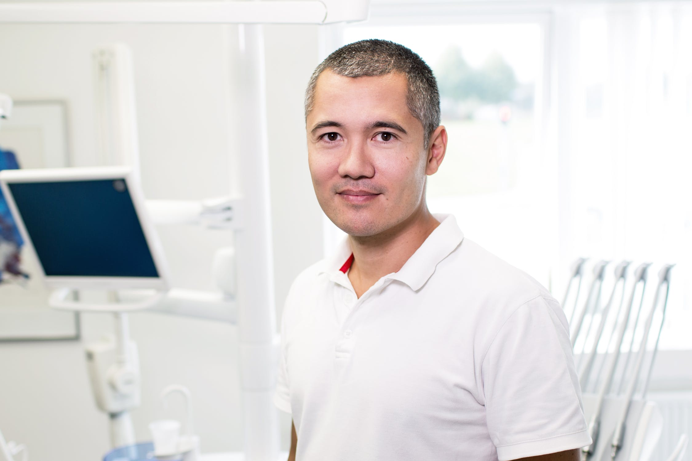

Niall Mc Cann
Nurse Niall Mc Cann is a 33 year old nurse at Ulster Medical Clinic. He enjoys spending time with family in addition to travelling the world hiking in his spare time. Niall has spent the last four years at the clinic and has gained valuable experience. In his spare time he spends time with his wife Kate and has a child currently on the way.
=======Dr. Sarah Clarke
Dr. John Smith is a senior GP at Ulster Medical Clinic. Dr. Smith has been working at the clinic over the last ten years. He currently lives at home with his wife of ten years Sarah Smith and their two children. Outside his profession he enjoys an avid personal life including personal activities with his friends and family. He manages his local soccer club at weekends and travels to the beach with his family whenever he can.
>>>>>>> 7330a08e46449c580614f0dbdc21aa9be7bf62ccJemma Hutchinson
Nurse Jemma Hutchinson is a 42 year old nurse at Ulster Medical Clinic. Jemma has been working at the Clinic for the last ten years. She has Three children, Daughter Michaela (7) and sons Peter (14) and Steven (8) and enjoys spending time with family and sewing/knitting in her spare time as well as reading.
=======Dr. John Smith

Dr. John Smith is a senior GP at Ulster Medical Clinic. Dr. Smith has been working at the clinic over the last ten years. He currently lives at home with his wife of ten years Sarah Smith and their two children. Outside his profession he enjoys an avid personal life including personal activities with his friends and family. He manages his local soccer club at weekends and travels to the beach with his family whenever he can.
>>>>>>> 7330a08e46449c580614f0dbdc21aa9be7bf62ccKate Hill
Nurse Kate Hill is a 54 year old nurse at the Ulster Medical Clinic. Kate has been working here for the last twenty years and has a bundle of experince to help you! She is a senior nurse and is in charge of maintaining order for all nurses. In her spare time Kate likes to spend time with her two sons Seamus and Darren, along with husband Frank. She also loves Yoga and long walks on the beach
=======Dr. Matt Hill
Dr. John Smith is a senior GP at Ulster Medical Clinic. Dr. Smith has been working at the clinic over the last ten years. He currently lives at home with his wife of ten years Sarah Smith and their two children. Outside his profession he enjoys an avid personal life including personal activities with his friends and family. He manages his local soccer club at weekends and travels to the beach with his family whenever he can.
>>>>>>> 7330a08e46449c580614f0dbdc21aa9be7bf62cc